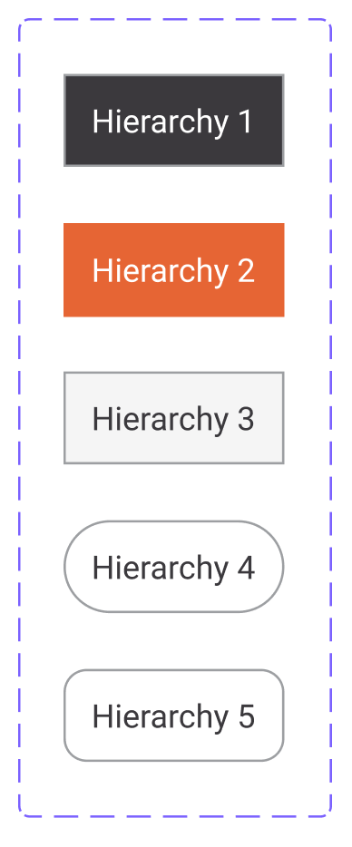
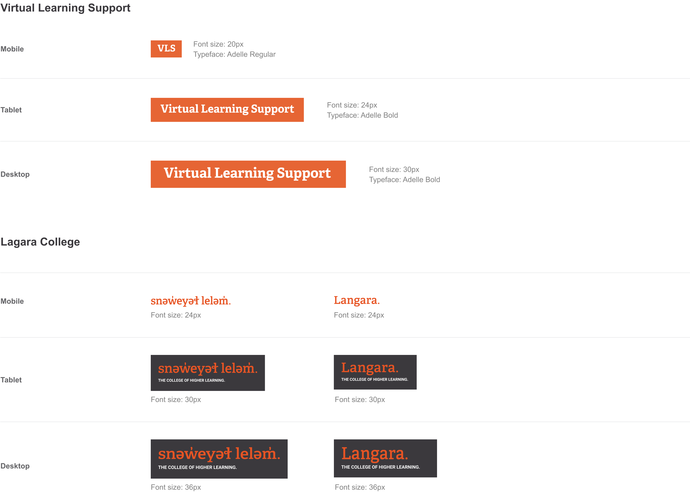
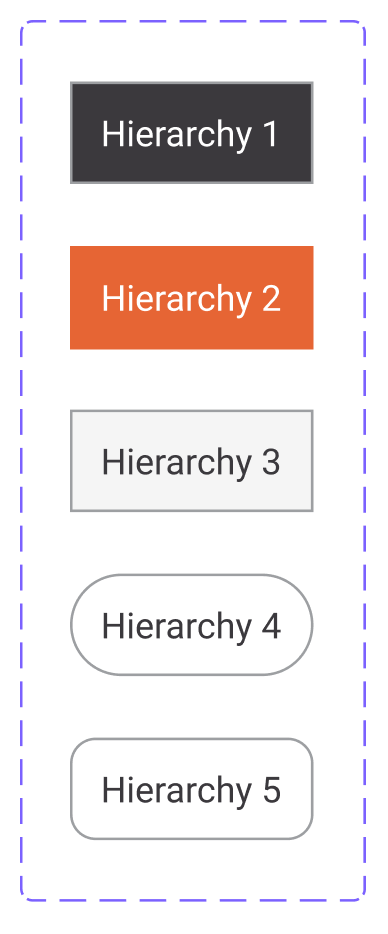
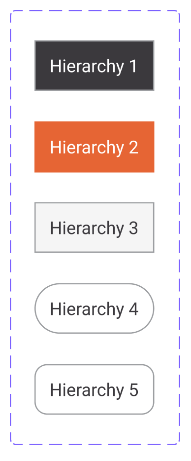

Virtual Learning Support, a place where you can find resources and connect with someone from the Learning Support Team to get help with academic and online learning. This website is a service supported by Langara College. The development team consisted of project Administrator and two WordPress developers.
My role eventually transformed into focusing mainly on user experience and user interface design of the website. My colleague took the responsibility of coding and WordPress front-end development. Nonetheless, I assisted the project administrator in minor front-end coding during urgent occasions, such as in the absence of our Developer.
Problem
The majority of Virtual Learning Support users are students, who access the website via their desktop devices (based on analytics provided by the project Administrator). Initially, the structure of website had been created via WordPress templates (Twenty Ten), utilizing Elementor to customize the interface. Therefore, the installed plugins such as calendar, contact form, etc. gave us limited opportunities to manipulate and redesign the User Experience aspect.
Solution
Our solution to update and create an accessible, user-centered design was to create documentation of required updates, which we will go through in the following sections, and redesign the User Interface to create dynamic yet user-centric website. After first iteration of design updates, we planned to investigate more on the existing plugins and update sections based on the updated direction of the platform.
Supporting Features
Virtual learning Support offer a variety of services to help students get on board with the experience of studying online and virtually. This website is the hub amongst a variety of platforms, from Writing and tutoring support, to Booking online appointments with peer tutors.
Student FAQs
Most frequent questions asked regarding online learning and virtual classes.
Tips & Resources
Tips on the essential tools and resources utilized by students
Online Learning Tools
Providing specific resources and information on learning tools required for virtual classes.
Apps & Brightspace Support
Students can book appointments with tutors to get professional help.
Writing & Tutoring Support
Services provided for online writing and self-help writing guides.
Library Services
Specific information provided on the services supported by the Library.
Design & Development Schedule
I created workpackages for both design and development schedule by separating Mobile and Ipad iterations as the first step, and continue working on desktop for the following week. The intention behind distinguishing the process in sprints suited the responsive design we anticipated for a variety of screen sizes. We would discuss design process during Monday team meetings and after approval from all stakeholders, I would start designing for desktop for the following week.
My collaboration with Virtual Learning Support started by prioritizing sections regarding development plan based on the context of each page (services). Some pages required updates on dataset from different departments, hence those services became the least priorty of development until updated. The process of planning out the development steps prompt me to start the task management of the project via Asana Software.
User Experience
In order to redesign the website and enhance the content delivery, I created the platform's Sitemap. These charts highlighting the hierarchy in section and subsections per page helps clarify the utilized UI component furthermore.
Sitemap
The displayed charts of sections and subsections demonstrates the content provided per each service. The remaining pages such as FAQS and Tips & Resources, had the lowest severity to be included in the development schedule since they were at an acceptable state (Visually).

Home Page Initial Layout
As displayed on the screenshots below, the initial state of the website was very cluttered and unorganized. We started the development by designing and developing the menu. I utilized a hamburger menu to minimize the menu space on mobile sizes. Also, having number of navigation menu items required a collapsible menu. The menu in the updated version (displayed in the next section) is compatible with both small and larger device sizes.
The format of services menu in the middle section of the screen was recommended to be kept by the project manager since the accessibility to core supporting pages for students is the service this platform provides. Having constraints on the installed plugins, there was not much room for improvement.
Home Page Redesign
As displayed on the screenshots below, the initial state of the website was very cluttered and unorganized. We started the development by designing and developing the menu.
Home Page (Landing)
Home Page (Services Navigation)
Home Page (Blogs)
Home Page (Calendar)
Living & Learning Online
As displayed on the screenshots below, the initial state of the website was very cluttered and unorganized. We started the development by designing and developing the menu.
Blogs Archive Page
Online Learning Tools Initial Layout
As displayed on the screenshots below, the initial state of the website was very cluttered and unorganized. We started the development by designing and developing the menu.
Accessibility Test
We were able to conduct an accessibility test after 70% of the development plan was accomplished. We conducted the usability remotely with a visually impaired student from Langara College.
The major change that had to be anticipated in the design aspect for the project aspect was to keep anchor tags highlighted with underlines on hover, and implement more descriptive labels as button text.
Branding
Langara College has established their own Design Language and guidelines that creates structure into the Virtual Learning website redesign.
On the other hand, Virtual Learning Support has been opporating post panademic and therefore, the branding for this platform is only limited to Lettermark Logo.

Illustrations
All the displayed illustrations and visual assets are designed, created and executed via Figma. These illustrations are used on cards containing content.
GIF Animation
Additional to descriptive illustrations created for different sections, I anticipated to create GIF animations for an enhanced content delivery that is more engaging for our prospect users.
Initially I had designed an illustration guiding the users to use the Apps and Brightspace scheduling service and book a meeting with tutors for extended help and assistant.
I used Figma and Adobe Illustrator to sketch the illustration. I then executed layers of Vectors and created the GIF animation via Adobe After Effects and Adobe Premier Pro.
UI Kit
The following document displays assets and components utilized in Mobile, Tablet and Desktop device sizes.
UI Kit
Having the current result of the development as first and initial iteration, therefore, this platform lacked efficient documentation of assets and components. The following UI Kit and its documentation has been created by me.
Based on our initial intention of developing the website more dynamically, the designed visual assets contain more youthful and colorful approach, as well as descriptive and suitable for educational platform.
The following document displays assets and components utilized in Mobile, Tablet and Desktop device sizes.


 
